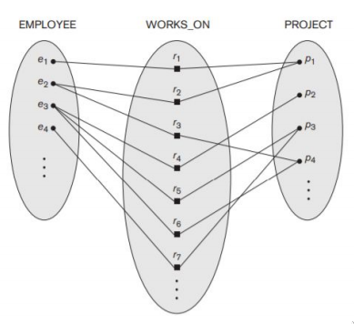

ER Model
Definition
ER Model stands for an Entity-Relationship Model, a high-level conceptual data model that is used to define the data elements and relationship for a specified system.
Concepts
Entity
Entity is an object in the miniworld, it can represent a physical objects (like cars), or conceptual ones (like contracts) e.g: students, cars, contracts, events, etc
Attribute
Attributes are the characteristic of an entity that can be associated with a data type (such as integer or string). e.g: name, address, telephone numbers, etc
Weak Entity
Weak entity is basically an entity, except it doesn’t have any key attribute. Because of this weak entity needs to participate in an identifying relationship with an owner or identifying entity type
Weak entity can be identified with the combination of:
- Partial key from weak entity type
- Attribute from an owner entity that becomes a bridge between the weak entity and the owner
Types of Attributes
By Value
- Simple : An attribute only contains one value, e.g gender
- Composite: An attribute is made up of several attributes, e.g name (made out of first, middle, and last name)
- Multi-valued: An attribute that contains multiple value, e.g degree
By Derivity
- Stored: normal attribute, e.g birthday
- Derived: attribute that is derived/calculated from a stored attribute, e.g age
There’s also something called Entity Type, it’s basically a set of an entity that has a common attributes, e.g Employee who’s set contains personaA, personB, etc
Key Attribute
Key attributes attributes that’s unique, it can be made out of composite attribute and an entity **may have more than 1 key attribute **. Choosing a key attribute is an important thing when designing a database because:
- It affects the integrity and validity of the data
- It makes sure that there are no duplicate
- It makes the integrity in check, making sure it’s quality
Rules of Choosing Key Attribute
- It’s an attribute that will not change
- An attribute that always have value, and cannot be null
- Avoid an attribute that has an intelligence or code built-in, or in a layman terms an attribute that changes daily
Relationship
A relationship can be made between 2 or more entity (n-nary where n is the number of entity involved) with a certain meaning. e.g EMPLOYEE Kiram works on the TL PROJECT. In other words a relationship known as WORK_ON occurs between the entity EMPLOYEE and PROJECT.
Structural Constraints
A structural constraint is used to express the semantics between relationship.
Cardinality Ratio
- One-to-One (1:1)

- Many-to-One (N:1)

- Many-to-Many (N:M) 
- One-to-One (1:1)
Recursive relationship (participate more than 1)
Participation Constraint
- Total: Meaning every element in the set could be categorized
- Partial: Meaning not all element in the set could be categorized
Alternative Notation (min, max)
Basically min, and max would be the numbers needed to describe the range. 1 would mean = 1,1 many = 0,N
Check the next level of ER, which is EER Model#